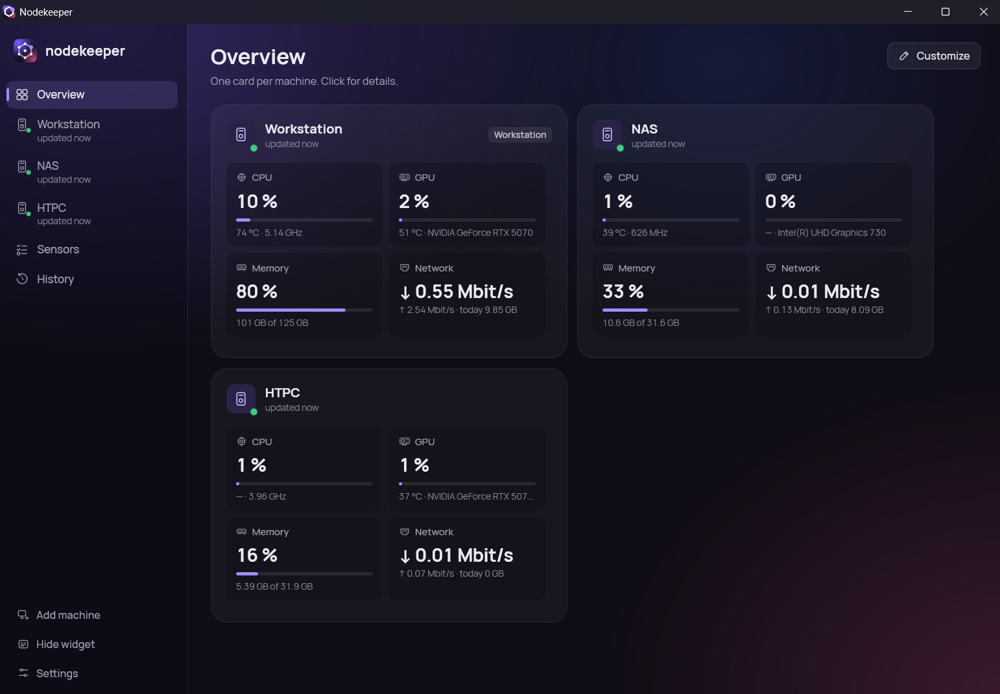
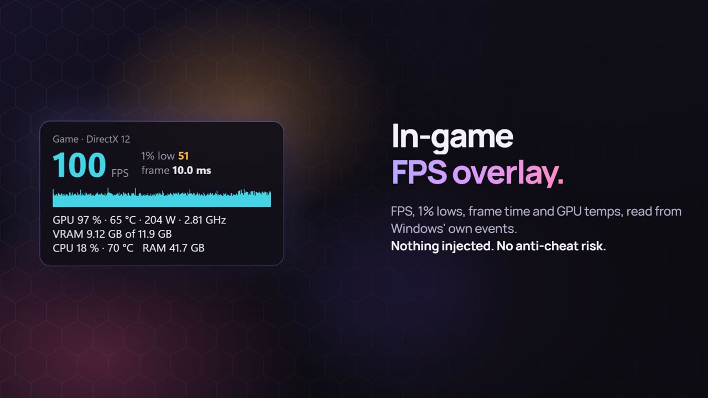
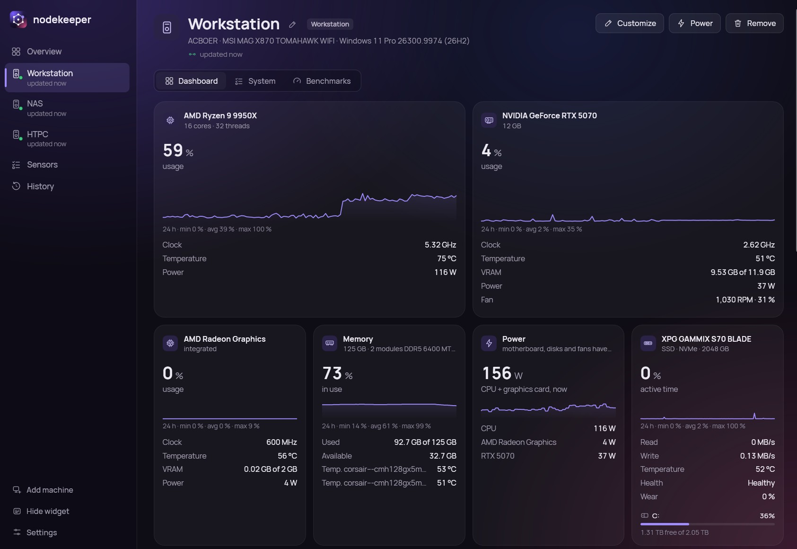
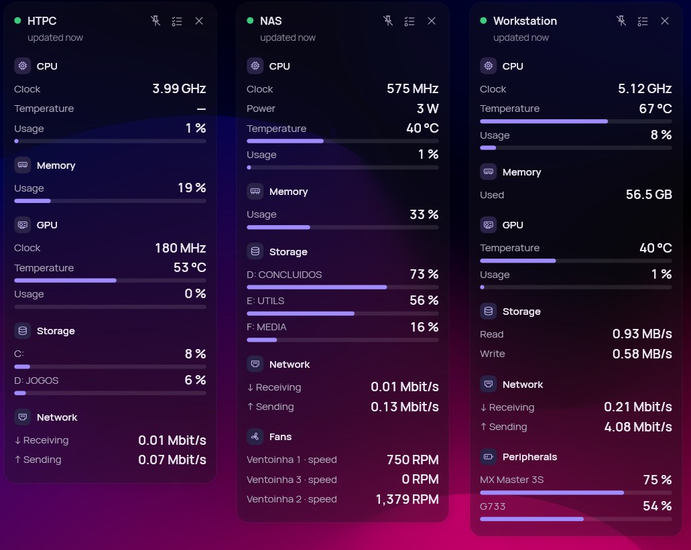
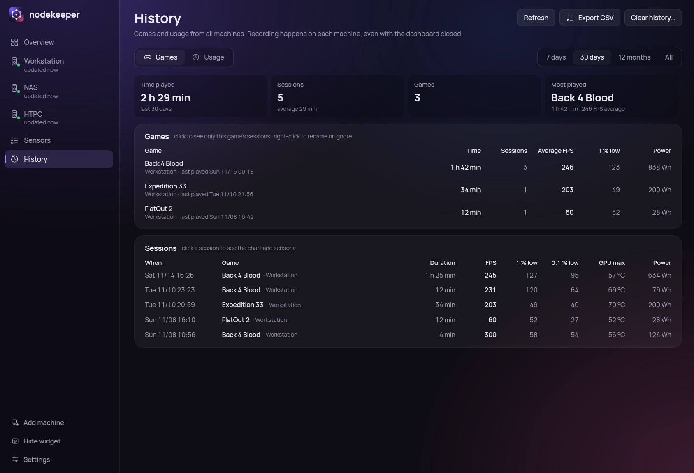
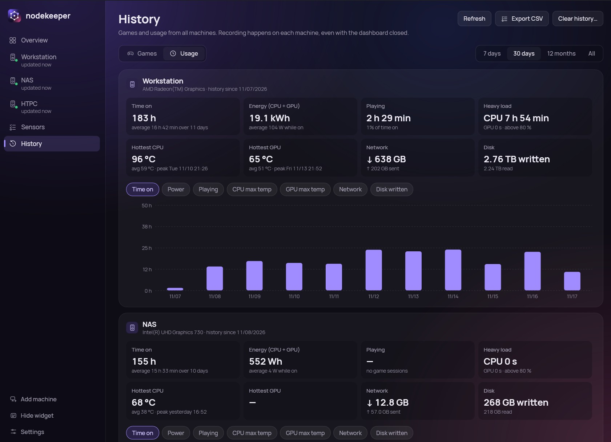
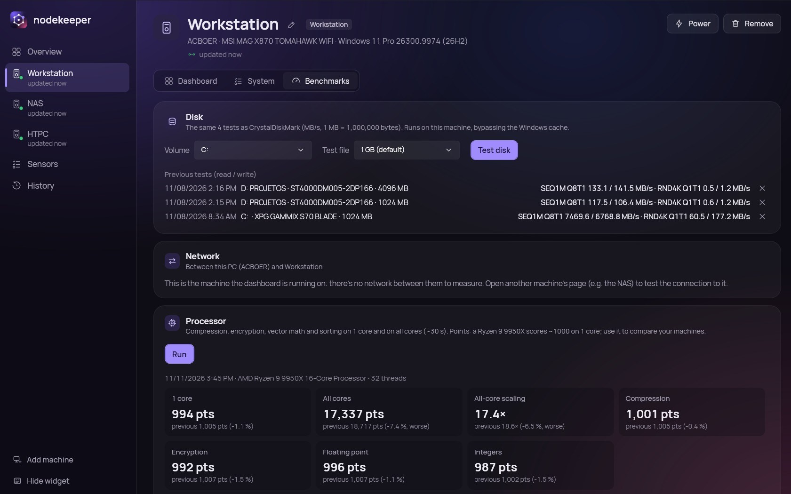
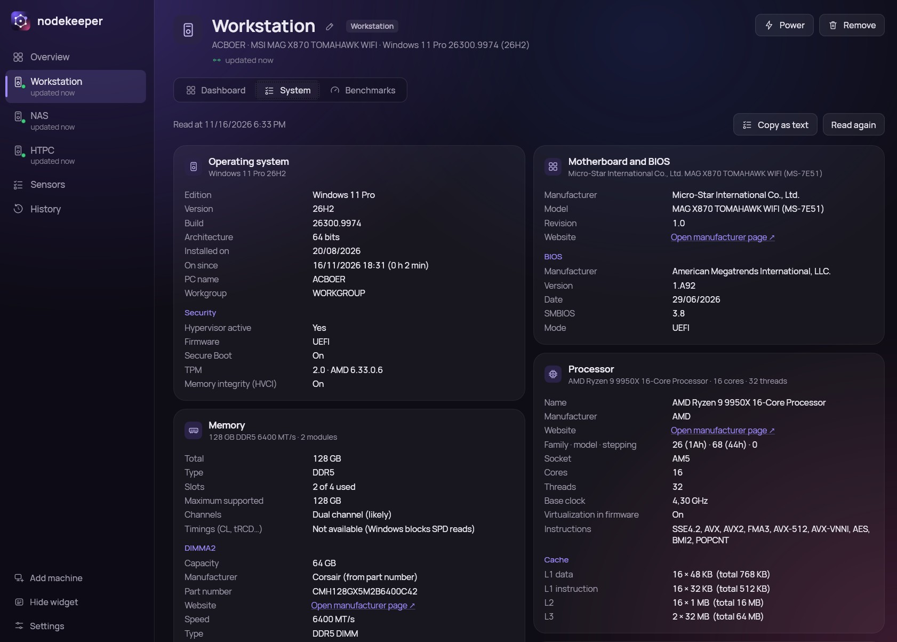
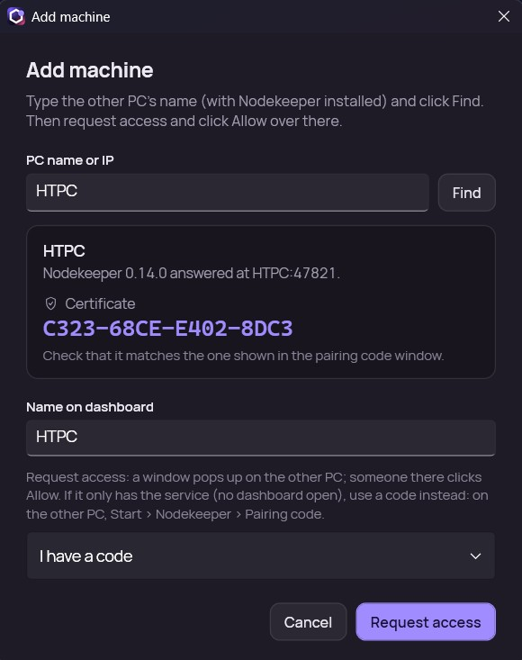
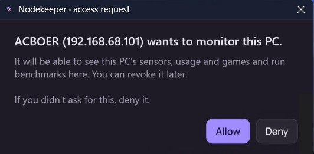

Live dashboard
CPU, GPU, RAM, disks, volumes, network, fans, power and peripherals, with 24-hour charts and yellow/red states for heat, full disks and failing drives.
Free & open source · Windows 10/11
Temperatures, usage, fans, disks, network, battery, in-game FPS and benchmarks for your gaming PC, your NAS and your render nodes. In one dashboard and an always-on-top desktop widget.

Install the service on each PC and watch them all from one dashboard.
CPU, GPU, RAM, disks, volumes, network, fans, power and peripherals, with 24-hour charts and yellow/red states for heat, full disks and failing drives.
Task Manager-style graphs for CPU (overall or per core), memory, disks, network and GPU engines, with the temperature drawn over the usage and 10 min / 1 h / 24 h views.
Gaming rig, NAS, HTPC, render nodes. Pair a PC by clicking Allow on it, or with a one-time code. Wake an offline PC from the dashboard.
Hot CPU or GPU, failing disk, full volume, low battery, PC not responding. Windows notifications, plus ntfy, Discord or Telegram. Rules run in the service, so they work with the dashboard closed.
FPS, 1 % low and frame time on top of full-screen games, read from Windows' own events. Nothing is injected into the game.
One widget that cycles through your PCs, or one per PC. Vertical or horizontal, compact or visual, adjustable transparency and a global shortcut.
Battery charge, drain in watts, time left, health and charge cycles, Wi-Fi signal, power mode, and alerts for low, charged and worn batteries.
Every metric recorded; game sessions with FPS, temperatures and power; daily time on, energy and traffic; CSV export.
Disk, network between two PCs, CPU, memory, GPU (DirectX 11 compute) and a stability test with error checking and throttling detection.







It isn't code-signed yet, so Windows SmartScreen warns: click More info › Run anyway.
Full for the PC you sit at, Service only for a PC you watch from another one (NAS, server, render node), or Dashboard only.
Add machine, find it by name, Request access, then click Allow on that PC. A PC with only the service shows a pairing code instead.


No surprises. This is everything the installer changes on your system.
Reading motherboard, CPU and disk sensors (and the frame events for the FPS overlay) requires administrator rights. The Nodekeeper service does that work, so the dashboard runs as a normal user.
CPU temperature and power, fans and RAM temperature are read through PawnIO, downloaded from the official project if it's missing. Other sensor tools use the same driver, so it stays when you uninstall.
TCP 47821 on private and domain networks, never public Wi-Fi, so dashboards on your other PCs can reach the service. Traffic is HTTPS with a per-machine certificate pinned when you pair.
No telemetry, no accounts. The service only answers the dashboards you pair on your own network and never goes online. The dashboard checks GitHub once a day for updates, and you can turn that off.
Nodekeeper is a solo project, and free signing for open source needs some public track record first. Meanwhile, every release is built by GitHub Actions from the tagged source, nothing is built on a developer machine, and each release links a VirusTotal scan of the installer. If Smart App Control is on, Windows blocks unsigned apps; it's fine to wait for a signed release.
Nodekeeper is MIT-licensed. If it helps you, a star on GitHub or a bug report helps the project grow.